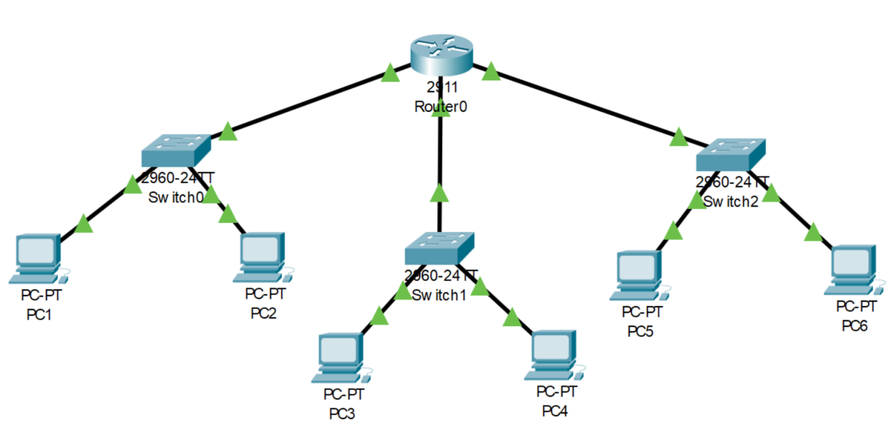
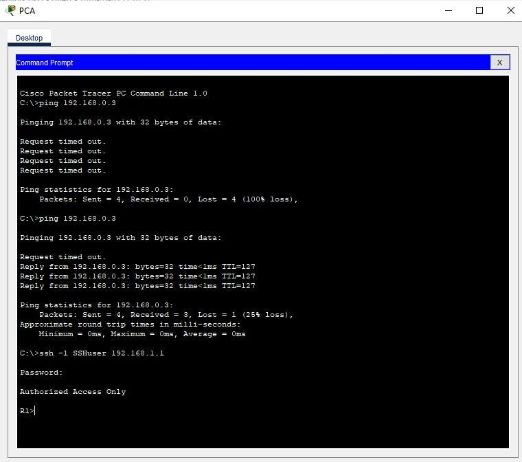

À propos du Projet
Ce projet m'a permis de maîtriser les technologies réseaux et d'acquérir une expérience solide en administration de systèmes informatiques.
Ce projet m'a permis de comprendre les principes fondamentaux de la conception et de l'administration de réseaux informatiques, ainsi que les bonnes pratiques en matière de configuration
Points Clés
- Créer un systeme de réseau lan fonctionnel
- Comprendre et appliquer les principes de routage
- Créer des servers DHCP
Technologies Utilisées
Cisco packet Tracer
Logiciel de simulation de réseaux
Résultats et Apprentissages
60%
Fonctionnalités Implémentées
8.5/10
Connaissances
Ce que j'ai appris
Ce projet m'a fait découvrir l'instalation de réseau et a renforcer et m'a permis de mieux comprendre les connaissances que j'avais déjà en hébergement de servers
Galerie du Projet


×